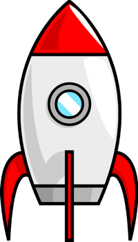
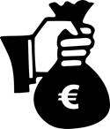

El manteniment preventiu és una pràctica essencial per garantir el funcionament òptim dels sistemes i equips de tecnologia de la informació (TI). Consisteix a realitzar activitats planificades i sistemàtiques per identificar i corregir possibles problemes tècnics abans que es converteixin en incidents crítics.
Els objectius del manteniment preventiu inclouen reduir el risc de fallades en els sistemes i equips, millorar la disponibilitat i el rendiment, optimitzar la vida útil dels equips, garantir la seguretat de la informació i les dades, i proporcionar un entorn de treball més eficient i fiable.
A més, el manteniment preventiu ajuda a minimitzar els costos de manteniment i reparació, millora la satisfacció del client en garantir un servei continu i d'alta qualitat, redueix l'impacte ambiental i el consum d'energia, i garanteix la integritat dels sistemes i equips.

